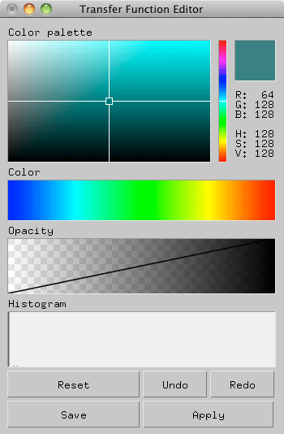

kvsviewのTransfer Function Editor を使う
kvsview のレイキャスティングレンダラーを使って伝達関数を変更してみる．
伝達関数とは，ボリュームデータのスカラー値（密度値）と色・不透明度を対応付けるマッピングテーブルのことをいいます．
lobster のFLDファイル： lobster.fld
$ kvsview -RayCastingRenderer lobster.fld
を実行するとレイキャスティングの結果が表示されます．
レイキャスティング結果
左下のカラーマップをダブルクリックすると，『Transfer Function Editor』が現れます．

Transfer Function Editor
この『Transfer Function Editor』内の"Color"や"Opacity"をマウスで操作し．『Apply』ボタンをクリックすればレンダリング結果が変わります．ここで，Color は密度値に対して色を決定します．Opacity も同様に密度値に対して透明度を決定します．Opacityは直接マウスでラインを操作できます．
Transfer Function 操作結果
色と透明度を変更した結果，レイキャスティング結果が変わっていることが確認できます．
また，この変更後の伝達関数は『kvsml』形式で保存できます．『Save』ボタンを押せば，現在表示されている伝達関数を保存することができます．保存すると，
tfunc_日付_時間.kvsml
というファイルが作成されます．
kvsml ファイルを作成する
1. DataArray型
上で作成したkvsmlファイル ： tfunc.kvsml
の中身は以下の通り．
<?xml version="1.0" ?>
<!-- Generated by kvs::KVSMLTransferFunction::write() -->
<KVSML>
<TransferFunction resolution="256" min_value="0" max_value="0">
<ColorMap>
<DataArray type="uchar">
254 70 54 254 70 54 254 70 54 25
…
</DataArray>
</ColorMap>
<OpacityMap>
<DataArray type="float">
0 0 0 0 0 0 0 0 0 0 0 0 0 0 0 0
…
</DataArray>
</OpacityMap>
</TransferFunction>
</KVSML>
これは "DataArray" と書いてあるように，色と透明度が配列で表記されています．
ここでは，TransferFunction resolution="256" と書いてあることから，データ値（上の例ではlobster.fdの密度値）を256階調で表現しますということになります．
そのため，カラーマップ：
<DataArray type="uchar">
254 70 54 254 70 54 254 70 54 25
は
データ値 0 のとき， R = 254, G = 70, B = 54
データ値 1 のとき， R = 254, G = 70, B = 54
…
のように，３つで1つのデータの色を表しています．
（全部でresolution × 3 個のデータが並んでいます）
次に，オパシティ：
<DataArray type="float">
0 0 0 0 0 0 0 0 0 0 0 0 0 0 0 0
はカラーマップと同様に
データ値 0 のとき，透明度 0
データ値 1 のとき，透明度 1
…
のようにデータ値と透明度の値が1対１の関係になります．
（全部で resolution 個のデータが並んでいます）
このままでは，編集が大変なので，次のような書き方もできます．
2. データポイントだけを記述したkvsmlファイル
編集しやすい（？）kvsmlLファイル：testFunc1.kvsml
中身は以下の通り．
<?xml version="1.0" ?>
<KVSML>
<TransferFunction resolution="256">
<ColorMap>
<ColorMapValue s="0" r="255" g="255" b="255"/>
<ColorMapValue s="255" r="255" g="0" b="0"/>
</ColorMap>
<OpacityMap>
<OpacityMapValue s="0" a="0"/>
<OpacityMapValue s="50" a="0"/>
<OpacityMapValue s="255" a="1"/>
</OpacityMap>
</TransferFunction>
</KVSML>
このデータを
# kvsview -TransferFunction testFunc1.kvsml -c
で描画すると，
カラーマップ表示
白から赤へ変化するようなカラーマップだということがわかります．
これは，
<ColorMapValue s="0" r="255" g="255" b="255"/>
<ColorMapValue s="255" r="255" g="0" b="0"/>
の通り，
s="0" r="255" g="255" b="255" では，データ値が 0 のとき，R = 255, G = 255 , B = 255 (白)
s="255" r="255" g="0" b="0" では，データ値が 255 のとき，R = 255, G = 0 , B = 0 (赤）
となり，その間の色は各色について線形補間した値が採用されます．
オパシティも同様に，設定した場所での値以外は線形補間で表されるので，この例ではオパシティカーブは
0 ～ 50 の間は 0，50 ～ 255 の間は 0 -1 を結ぶ直線で補間された値になります．
カラーマップを確認したときと同様に，オプションを『-a』とすれば：
$ kvsview -TransferFunction testFunc1.kvsml -a
オパシティマップを確認することができます．
このカラーマップを使って先ほどと同様に lobster.fld を描画：
$ kvsview -RayCastingRenderer lobster.fld -t testFunc1.kvsml
すると以下のような絵になります．
testFunc1.kvsmlを使って例キャスティングした結果
このように，必要なポイントだけを書いておくこともできます．
また，１と２の記述方法は混在していても大丈夫です．
つまり，ColorMap は１．のDataArray でかき， OpasityMap は２．のデータポイントだけ書くということもできます．
混合させたkvsmlファイル：testFunc.kvsml
Modefied at June 28, 2011
Modefied at June 1, 2015
Modefied at April 12, 2017